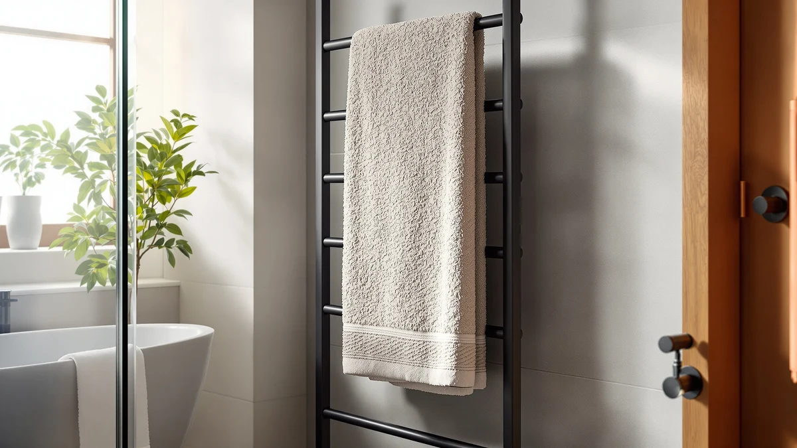

How to Install Bathroom Towel Rail (2026)
Prices and picks verified as of August 2026. Independent, reader-supported reviews.


Things to Know Before You Buy
- Most towel rails need to anchor into a wall stud or a heavy-duty toggle anchor, since a soaked towel adds real weight to the bar.
- The standard mounting height for a bathroom towel rail is 42 to 48 inches from the floor, roughly level with the top of a vanity.
- Tile and drywall call for different anchoring approaches, so identify your wall material before you pick up the drill.
- A basic install takes about 45 minutes and runs around $25 in hardware if your rail doesn't already include screws.
- Sealing screw holes with a dab of silicone caulk keeps moisture from working behind the wall over time.
Learning how to install bathroom towel rail hardware takes less time than most people expect: a drill, a stud finder, and a level get the job done in under an hour, even if the heaviest thing you've hung before is a picture frame. The process is the same whether you're replacing a rail that pulled out of the wall or adding one to a bathroom that never had one.
This guide walks through five steps: marking your height, locating a stud or planning anchors, drilling and mounting the brackets, attaching and leveling the rail, and testing the finished install. Follow them in order and you'll end up with a rail that holds a wet towel without sagging or working loose after a few months.
What You'll Need
Before you install your bathroom towel rail, gather the supplies and tools below. Having everything on hand before you start keeps you from stopping mid-job to hunt for a missing anchor.
- Supplies: wall anchors rated for at least 20 pounds, mounting screws, silicone caulk
- Tools: cordless drill with driver and masonry bits, stud finder, level, tape measure, pencil
Step 1: Mark your mounting height and level line
Start by deciding where you'll install the bathroom towel rail. Most installers set the bar between 42 and 48 inches above the floor, close to the shower or sink so a towel is within reach after you dry off. Hold the rail against the wall at that height and mark each end's screw locations with a pencil.
Set a level against your marks before you commit to anything. A rail that's off by a quarter inch over an 18-inch span looks crooked once it's mounted, and the gap is easy to spot from across the room. Draw a light horizontal line connecting your two marks so you have a straight reference for the brackets.
If you're mounting near a tiled shower wall, measure twice. Grout lines make an uneven installation more obvious than a plain drywall surface does.
Step 2: Find a stud or plan your anchor points
Run a stud finder along your guide line and mark any stud it detects. A screw driven into solid framing holds far more weight than one in hollow drywall, so a stud is always the strongest option when your layout allows it.
You won't always get a stud at both bracket points, and that's normal. For any mark that lands between studs, plan on a toggle or self-drilling anchor rated for at least 20 pounds. On tile, use anchors made for masonry rather than the plastic ones sold for drywall, since standard anchors can crack under torque.
Double-check your two mounting points sit the same distance apart as the holes on the back of your rail brackets before you drill anything.
Step 3: Drill pilot holes and mount the brackets
Drill a pilot hole at each mark. On tile, start the bit at low speed and increase pressure gradually so it doesn't skate across the glaze; a strip of painter's tape over the mark helps the bit bite without slipping.
Tap or screw the anchor into the hole until it sits flush with the wall, then hold the bracket in place and drive the mounting screws through it into the anchor or stud. Snug the screws down firmly, but stop once you feel resistance. Overtightening can strip the anchor or crack tile around the hole.
Repeat for the second bracket, checking that both sit on your level line before you move to the next step. These two brackets carry the full weight of the rail, so a solid mount here is what makes the rest of the towel rail installation hold up over time.
Step 4: Attach the rail and check it's level
With both brackets secured, snap or screw the rail bar onto them, following the fastening method that came with your specific hardware. Some rails clip into place, others need a small setscrew tightened from underneath.
Once it's on, set a level across the top of the bar. If one end reads high, loosen that bracket's screws slightly, nudge it, and retighten. This is the point in any bathroom towel rail installation where small adjustments matter most, since the rail is fully visible and any tilt shows immediately.
Give the whole assembly a firm push and pull by hand to confirm nothing shifts before you consider the job done.
Step 5: Test the rail and seal the screw holes
Hang a wet towel on the rail and leave it for a few minutes. This is a more realistic test than tugging on the bar with dry hands, since the added weight reveals any bracket that's starting to pull loose.
Tighten any screws that shifted, then run a thin bead of silicone caulk around each screw head if the rail sits near a shower or tub. Sealing those points keeps splashed water from working its way behind the wall and softening the anchor over time.
Let the caulk cure per the label instructions, typically 24 hours, before you hang your heaviest towels.
Common Mistakes to Avoid
The most common mistake in a bathroom towel rail installation is relying on plastic anchors alone in a spot that gets daily use. Plastic anchors work in light-duty applications, but a towel rail takes repeated pulling and leaning, and a cheap anchor can slowly work its way out of drywall over a few months. Use metal toggle anchors or hit a stud whenever you can.
Skipping the level step is another frequent error. It's tempting to eyeball a single bracket and assume the second one will line up, but wall studs and drywall aren't perfectly flat, and a rail that's even slightly off catches your eye every time you walk into the bathroom. Take the extra thirty seconds to check both brackets against a level line.
Drilling into tile without slowing down causes cracked or chipped glaze, which is expensive to fix and impossible to hide. Start slow, use a masonry bit, and apply steady pressure instead of forcing the drill.
Finally, don't skip the caulk around screw holes near a shower or tub. Splashed water finds its way into any gap around a screw head, and over a year or two that moisture can soften drywall or corrode a metal anchor from the inside, long before you notice the rail loosening.
People also underestimate spacing. A rail mounted too close to a door or shower curtain catches on fabric every time someone walks past, so measure your swing clearance before you finalize the height and position.
Our Top Picks
Once your new bathroom towel rail is mounted, here's what we'd hang on it. These three bath towel sets balance absorbency, durability, and price for daily use.

Editor's Pick
Luxury White Bath Towel Set
Thick ringspun cotton that stays soft wash after wash, and the classic white matches any bathroom.
$39.99
Check Price on Amazon
Best Value
American Soft Linen Luxury 6
Six pieces of Turkish cotton for less than a two-pack costs at most other retailers.
$35.99
Check Price on Amazon
Premium Choice
Utopia Towels 8 Piece Luxury
Eight pieces cover towels, hand towels, and washcloths in one purchase, ideal for a full bathroom refresh.
$34.99
Check Price on AmazonFrequently Asked Questions
Do I need to drill into a stud to hang a towel rail?
Not always. A stud gives you the strongest hold, but heavy-duty toggle anchors rated for 20 pounds or more work fine on open drywall. On tile or plaster, use anchors designed for that surface instead of standard drywall anchors.
How high should a bathroom towel rail be mounted?
Most installers mount a rail 42 to 48 inches above the floor, close enough to the shower or sink that a towel is within reach. Adjust down a few inches in a bathroom used mainly by kids.
Can I install a towel rail into tile without cracking it?
Yes, if you drill slowly with a carbide-tipped masonry bit and start at low speed until the bit bites into the glaze. Put a strip of painter's tape over your mark first so the bit doesn't skate across the tile.
How long does it take to install a bathroom towel rail?
Budget about 45 minutes for a single rail, longer if you're locating studs across a wide span or working around existing tile. Two rails in the same bathroom rarely take twice as long once your tools are already out.
What can I do if my towel rail feels loose after installing it?
Remove the rail from the brackets and check whether the anchor is spinning freely in the wall. A spinning anchor means the hole is oversized, so swap in a larger toggle anchor or shift the bracket an inch to hit solid material.
Verdict
How to install a bathroom towel rail comes down to five steps you can finish in under an hour: mark your height, locate a stud or plan your anchors, drill and mount the brackets, attach and level the bar, then test it and seal the screw holes. Skip a level check or use the wrong anchor and you'll be back at the wall in six months, so take the extra few minutes at each step rather than rushing to the finish.
Once the rail is up, what you hang on it matters too. A set like White Classic's Luxury White Bath Towel Set gives you thick, ringspun cotton that holds up to daily use without sagging the bar or shedding lint. Pair a solidly mounted rail with towels that dry quickly between uses, and you'll avoid the musty smell and mildew that come from towels bunched on a rail that's too small or too crowded.